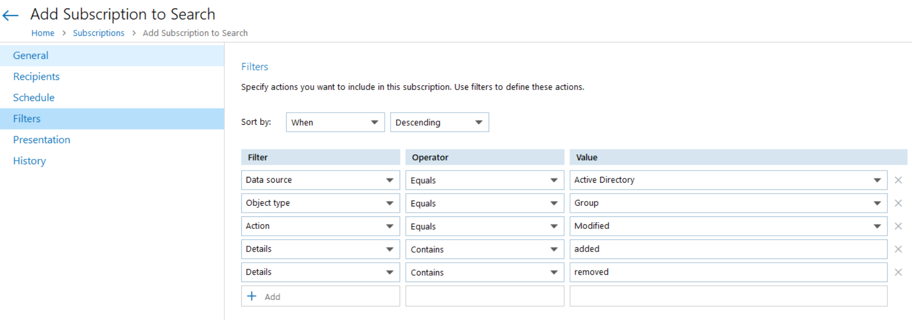

Question
How to get the list of users added/removed from an Active Directory group on a regular basis (for example, daily)?
Answer
Create a subscription to Netwrix search results with following parameters:
-
Filters.
Windows records users adding or removal as a change to the group itself, since the group is an AD object. So, that is why the Action filter type is suggested to be Modified.
-
Schedule = Daily.
Set the schedule to whatever frequency you want – the Subscription returns all events that occurred after the latest Subscription delivery. The initial one may have a lot.
For additional information on how to create subscriptions, refer to the following article: Administration – Subscriptions.